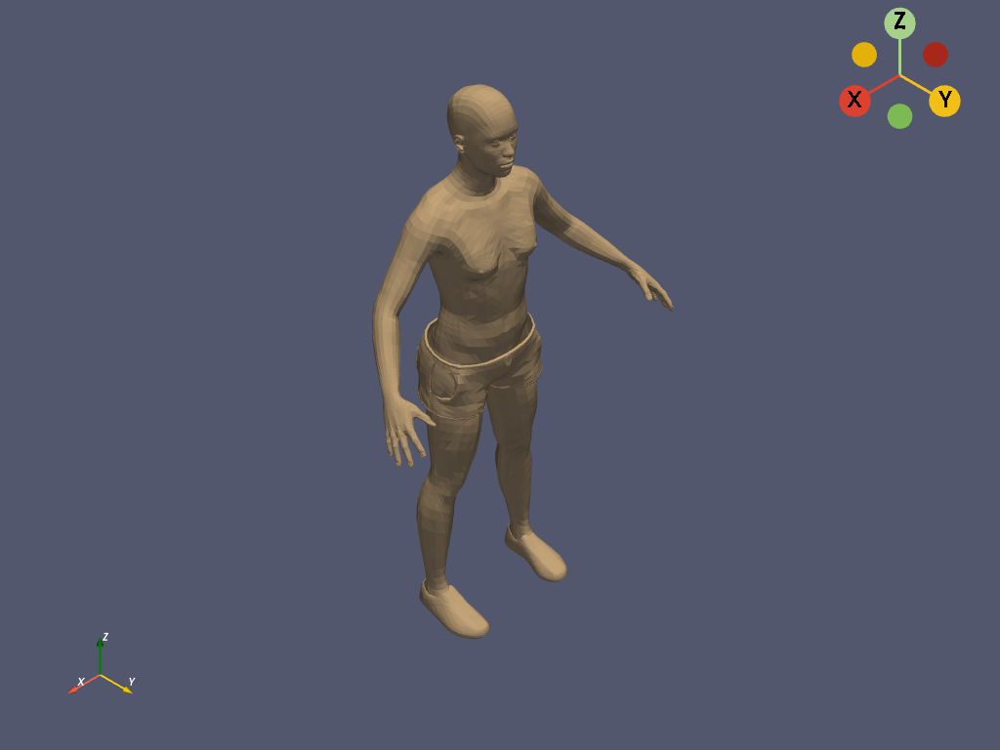

get_reader¶
- get_reader(filename)¶
データファイルの読み取りをきめ細かく制御するためのリーダーを取得します．
対応するファイルタイプとリーダー
ファイル拡張子
クラス
.case.facet.foam.g.obj.p3d.ply.pvd.pvti.pvtk.pvtr.pvtu.stl.tri.vti.vtk.vtm.vtmb.vtp.vtr.vts.vtu- パラメータ
- filename
str 読み込むファイルへの文字列パス．
- filename
- 戻り値
pyvista.BaseReaderファイルタイプに応じて，
pyvista.BaseReaderのサブクラスが返されます．
例
>>> import pyvista >>> from pyvista import examples >>> filename = examples.download_human(load=False) >>> filename.split("/")[-1] # omit the path 'Human.vtp' >>> reader = pyvista.get_reader(filename) >>> reader XMLPolyDataReader('.../Human.vtp') >>> mesh = reader.read() >>> mesh PolyData ... >>> mesh.plot(color='tan')
